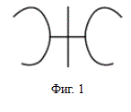
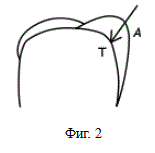

Беседа 3511 от 3877 · Беинса Дуно
Организиране
Отче наш.
Имате ли зададена тема? – /Имаме./ – Четете.
/Прочете се темата „Ползата от твърдите и течните вещества.“/
За другия път да начертаете един хубав триъгълник със страни по 10 сантиметра и един куб, пак със страни по 10 сантиметра. Хубаво ще го начертаете, изящно. Без погрешка. После ще го начертаете на един хубав лист, не какъв да е лист. Листът да е 15 сантиметра. Аз турям тия числа, понеже играят важна роля. Тъй щото ще спазите, ще начертаете страните добре.
За какво служи водата? За какво служи хлябът? Да кажем, в геометрията имате правата линия. За какво служи правата линия  ? Тя има свое предназначение. Водата е една подкрепа. Ако искаш да свършиш една работа, тебе ти трябва вода. Ако искаш да свършиш една работа, хлябът ти е потребен. Ако искаш да свършиш една работа, въздух ти е потребен. То са подкрепителни условия, които помагат. Често в живота има неща, които трябва да ви подкрепят. Да кажем, вие искате да разрешите един въпрос. Да допуснем, че вие сте художник, искате да нарисувате една цветна картина. Кое ще дойде на помощ на цветната картина? Очите ще ви дойдат на помощ за цветната картина. Да кажем, ако във вас обективният ум не е развит, тогава няма да имате една съразмерност в черепа. Някой път ще направите ушите по-големи или по-малки, някой път носа ще го направите голям или малък, на веждите няма да дадете правилната форма, която имат. Не мислите, че веждите на хората са направени както трябва. Може би векове ще минат, докато ги направите такива, каквито трябва. После носът ви не е такъв, какъвто трябва, устата ви не е такава, каквато трябва. Сега вие отговаряте на ония условия, при които живеете. Та казвам: Има една вътрешна страна. Всички искате да разрешавате социални въпроси. Социалните въпроси, те нямат близко отношение към вас. Онова, което вие придобиете, то ще ви ползува. Да кажем, ако имате една слаба памет, постоянно ще забравяте. Решите да направите нещо, забравите какво беше. Вие сте решили да идете във Варна, станете сутринта, казвате: „Къде щях да ходя?“ После мислите да идете в училище, но сте забравили. Мислите къде да идете. Понякой път има хора, които забравят името си. Паметта е от разни категории. Има памет за думи. Някои хора изучават езиците много лесно, някои много мъчно изучават езици. Някои изучават много лесно, понеже паметта е развита. Има една математическа памет, има една музикална памет, има една религиозна памет. В туй отношение помни всичките положения, понеже го интересува религията, всичките религиозни данни, секти, религии ги знае. Знае как се явило християнството, мохамеданството, всичките религии. Какво ще ви ползува? Ще имате една малка полза. Туй знание засега няма приложение. Запример, вие по какво познавате сега външно дали един човек е добър или не? Под думата „добър човек“ разбирам организиран човек, тялото му има хубав строеж. Всичко много добре е построено. Туй разбирам „добър човек“ обективно. Грозен човек или лош човек разбирам, който не е организиран, сбутан е той. Сега вие имате една идея, казвате: „Той е лош човек“. – Не е организиран добре. Добрият е организиран. В какво седи сега организирането? – Да има съответствие между неговите части. Добрият човек има съответствие, добре е организиран неговият ум, добре е организирано неговото сърце, добре е организирана неговата воля. Често говорят хората за културен човек, за култура. Една киселица може ли да мине за ябълка? Не може да мине за ябълка. Казвам: При сегашните условия, кое е необходимо за хората? Кое е необходимо за месоядните животни? Най-необходимо е да имат здрави зъби, да имат здрави крака, че като хванат жертвата, да я държат здраво. Кое е необходимо за тревопасните животни? Може ли всичките животни да бъдат месоядни? Или може ли всички да бъдат тревопасни? Някои от животните ядат трева, която е от маслата на някои животни, които са умряли и са разложени. Тия растения храната са взели от телата на умрелите животни. Може да кажем, че тревата е сготвена със свинска мас или с говежди лой.
? Тя има свое предназначение. Водата е една подкрепа. Ако искаш да свършиш една работа, тебе ти трябва вода. Ако искаш да свършиш една работа, хлябът ти е потребен. Ако искаш да свършиш една работа, въздух ти е потребен. То са подкрепителни условия, които помагат. Често в живота има неща, които трябва да ви подкрепят. Да кажем, вие искате да разрешите един въпрос. Да допуснем, че вие сте художник, искате да нарисувате една цветна картина. Кое ще дойде на помощ на цветната картина? Очите ще ви дойдат на помощ за цветната картина. Да кажем, ако във вас обективният ум не е развит, тогава няма да имате една съразмерност в черепа. Някой път ще направите ушите по-големи или по-малки, някой път носа ще го направите голям или малък, на веждите няма да дадете правилната форма, която имат. Не мислите, че веждите на хората са направени както трябва. Може би векове ще минат, докато ги направите такива, каквито трябва. После носът ви не е такъв, какъвто трябва, устата ви не е такава, каквато трябва. Сега вие отговаряте на ония условия, при които живеете. Та казвам: Има една вътрешна страна. Всички искате да разрешавате социални въпроси. Социалните въпроси, те нямат близко отношение към вас. Онова, което вие придобиете, то ще ви ползува. Да кажем, ако имате една слаба памет, постоянно ще забравяте. Решите да направите нещо, забравите какво беше. Вие сте решили да идете във Варна, станете сутринта, казвате: „Къде щях да ходя?“ После мислите да идете в училище, но сте забравили. Мислите къде да идете. Понякой път има хора, които забравят името си. Паметта е от разни категории. Има памет за думи. Някои хора изучават езиците много лесно, някои много мъчно изучават езици. Някои изучават много лесно, понеже паметта е развита. Има една математическа памет, има една музикална памет, има една религиозна памет. В туй отношение помни всичките положения, понеже го интересува религията, всичките религиозни данни, секти, религии ги знае. Знае как се явило християнството, мохамеданството, всичките религии. Какво ще ви ползува? Ще имате една малка полза. Туй знание засега няма приложение. Запример, вие по какво познавате сега външно дали един човек е добър или не? Под думата „добър човек“ разбирам организиран човек, тялото му има хубав строеж. Всичко много добре е построено. Туй разбирам „добър човек“ обективно. Грозен човек или лош човек разбирам, който не е организиран, сбутан е той. Сега вие имате една идея, казвате: „Той е лош човек“. – Не е организиран добре. Добрият е организиран. В какво седи сега организирането? – Да има съответствие между неговите части. Добрият човек има съответствие, добре е организиран неговият ум, добре е организирано неговото сърце, добре е организирана неговата воля. Често говорят хората за културен човек, за култура. Една киселица може ли да мине за ябълка? Не може да мине за ябълка. Казвам: При сегашните условия, кое е необходимо за хората? Кое е необходимо за месоядните животни? Най-необходимо е да имат здрави зъби, да имат здрави крака, че като хванат жертвата, да я държат здраво. Кое е необходимо за тревопасните животни? Може ли всичките животни да бъдат месоядни? Или може ли всички да бъдат тревопасни? Някои от животните ядат трева, която е от маслата на някои животни, които са умряли и са разложени. Тия растения храната са взели от телата на умрелите животни. Може да кажем, че тревата е сготвена със свинска мас или с говежди лой.
Често се намерите в едно безизходно положение. Туй неразположение духом хората го отдават на временните условия. Допуснете, че вие сте ученик, учите добре, но постоянно ви турят 3. Учите хубаво и пак 3 ви турят, по всичките предмети се 3. Как ще си обясните? Свършите с 3 гимназия, друг свърши с 6 гимназия. Каква ще бъда разликата? В диплома ще има разлика. Единият има шесторки, другият тройки. Аз казвам: Който свършил с 3 гимназия, ще бъде юпитеров тип в живота, който свършил с 6, ще бъде венерин тип. Който е свършил с 3, е мъжкият принцип, с 6 който е свършил, е женският принцип. Представете си, че вие искате да бъдете мъж, пък свършите с 6. Допуснете, че вие искате да бъдете малко женствен, а свършите с 3. Който свършва с 3, е мъжки принцип, 6:3 равно 2. Едно е мъжки принцип. Две е женски принцип. От три може да се развие мъжкият принцип. Сега научно да обусловим, какво трябва да разбираме под думата „мъжки принцип“. Под думата „мъжки принцип“ разбираме, дето има преобладаващо влияние умът и волята. Под „женски принцип“ разбираме, дето има преобладаващо влияние сърцето и волята. Преобладаващо влияние на ума и волята е мъжкият принцип. Преобладаващо влияние на сърцето и волята е женският принцип.

Та казвам сега: Науката в света трябва да се употреби за изучаване. Да изучавате себе си, кои способности и чувства трябва да развивате. Някой път казвате, че някой човек е твърд. Хубаво е да бъде твърд. Някой е много мек, отстъпчив. Когато човек е мек, твърдостта е слабо развита. Каквото му кажат, отстъпва. Казва: „Той има слаба воля.“ Твърдостта е чувство, не е способност. В българина чувството „твърдост“ е много развито. Българина вземат за мярка. Твърдият с девет чифта биволи трябва да го преместят. Казвам: Ако много си твърд, имаш повече от твърдостта. Ще задържиш колкото ти трябва, излишното ще го туриш настрана. Някой път имаш недоимък. Всеки каквото ти каже, ще го направиш. Твърдостта е едно чувство, което показва, когато си на правата страна, да бъдеш твърд, когато си на кривата страна, да бъдеш отстъпчив. За доброто да бъдеш твърд. Когато е за злото, да бъдеш мек, да не упражняваш твърдостта си, да бъдеш отстъпчив.
Сега представете си, че някои хора са яростливи, гневят се. В тях друго едно чувство е развито. Чувството на самосъхранение е силно развито. Във всички месоядни животни туй чувство е силно развито. У тревопасните животни туй чувство на самосъхранение по-слабо развито. Затова те се гневят по-малко. Запример, един вол като се разгневи, може да те набоде, най-първо ще те натисне с рогата на земята. Ако един лъв, един тигър или един вълк те нападне, ще откъсне, каквото хване. Едно тревопасно туй не може да направи. Някой път вие се сърдите. Не знаете причините на сръднята. Самосъхранението е по-силно развито. Не ви трябва толкоз багаж, оставете малко настрана. Някои сте по-меки, трябва повече твърдост. Някъде е повече твърдостта, отколкото трябва. Ще изваждате, ще събирате. Ще събирате, дето имате недоимък. Ще изваждате, дето имате повече. Знаете ли, кога ще изваждате от своята твърдост? Като имаш повече твърдост, събира се енергията. Как ще изваждаш тази енергия? Методи трябва за изваждането.

Сега имаме културни хора. Най-културните хора в света сега вършат най-големите престъпления. Ако те имаха туй Божествено чувство на справедливост, ни най-малко не биха извършили престъпление. Всеки иска да победи. Казвам: Понякой път ние започваме една война вътре в себе си и какво излиза? Не можем да се приспособим. Казва: „Аз не отстъпвам.“ Като не отстъпваш, какво ще добиеш? Да допуснем, че ти се бориш с една мечка, какво ще добиеш? Искаш да победиш една мечка. Как се побеждава мечка? Вие не бихте победили мечката. Страхливият побеждава мечката, като се качи на дървото горе. Казвам: Сега, при сегашните условия, трябва едно самовъзпитание. Всичките енергии, които са вложени в човешкия организъм, трябва да се организират или да се използуват. Всякога, когато не се използуват, се явяват най-големите противоречия. На първо място всякога се стремете да имате едно равновесие между вашия ум, между умствените способности и човешките чувства. Една мярка трябва да имате. Защото способностите се подхранват от чувствата в човека. Защото, когато човек стане силен в умствено отношение, влиза повече кръв в предната част на главата му. Или когато способностите и неговите чувства са силно развити, тогава иде повече кръв в мозъка, в сърцето и се развиват неговите чувства. Казвам: Трябва достатъчно кръв за човешките способности и достатъчно кръв за човешките чувства. И тогава, когато умствените способности се развиват повече, отколкото трябва, човек става сух, нервната система се развива чрезмерно, изтощава се човек. Когато чувствата се развиват чрезмерно, тогава симпатичната нервна система се развива и хората стават пълни, много пълни стават.
Кои са важните неща? За да се възпита твърдостта, трябва да се развие милосърдието. Тогава предната част, като се развие добре, уравнява. Милосърдието може да въздействува на човешката твърдост. Милосърдието въздействува и на човешкото разрушение. Хора, които са много разрушителни, ако се развие милосърдието, то организира. Та казвам: Ако милосърдието е слабо, ако разрушителността е силна и твърдостта е силна, тогава се явява престъпността в човека. Някой път за малка обида човек може да извърши престъпление. Самовъзпитание трябва на човека. Човек трябва да бъде разумен. Допуснете, че вие сте дали пари на един човек назаем хиляда лева. Той е много твърд, силна разрушителност и милосърдието е слабо. Вие искате да си вземете парите. Какво трябва да направите? Вие, ако се опитате със зло, вие ще си създадете нещастие за себе си. Та казвам: По Божествено ние разбираме – всичките сделки на хората трябва да се разрешават с организирането. Престъпността в света считам един неорганизиран свят. Неорганизираният свят трябва да се организира. Под думата „Божествен свят“ разбирам организиран свят. Организираният свят избавя човека от много злини в света. Вие как се спогаждате с вашата упоритост? Упоритият човек е твърд. Човек е упорит и своенравен. Едно Божествено чувство е твърдостта. Божествените чувства са тия, от тях се ражда своенравие, от твърдостта се ражда упоритостта. Казва: „Аз не мога да отстъпя.“ Силният човек, когато е здрав, не може да отстъпи, но когато се разболее, отстъпва. Богатият не може да отстъпи докато е богат, като осиромашее, отстъпва. Ученият като учен не отстъпва, като изгуби паметта, отстъпва.
Та казвам: Ние имаме един свят неустроен в дадения случай. Идейният свят рабираме свят, който е устроен, на който може да разчитаме. Всички ония способности и чувства, които може да владаме, ние сме господари. Та казвам: Човешката воля трябва да я употребите, да регулирате вашите мисли. С волята трябва да регулирате вашите мисли и чувства, да разсъждавате. Казва: „Не може да отстъпя.“ Ако със своята неотстъпчивост изгубиш повече, отколкото ще спечелиш, откажи се тогава. Ако от своята неотстъпчивост спечелиш повече, настоявай. Защото всичко е в придобивките на нещата. Ако ще спечелиш повече, не отстъпвай. В дадения случай, ако упорствувате и с вашето упорство придобиете повече органически сили, упорствувайте. Ако в упорството изгубите повече органически сили, не упорствувайте. Ако в разрушението спечелиш повече, настоявайте; ако няма да спечелиш, не настоявайте. В неорганизираните неща човек вътре в себе си трябва да си въздействува на твърдостта с милосърдие, на разрушителността с милосърдие трябва да въздействува. На страха трябва да въздействува с вярата, с надеждата и с любовта си. Страхът е една сила, която организира. Страхът предпазва слабите, предпазва ги от силните. Тогава слабият трябва да има голяма вяра и много подвижен ум. Най-малкото да взема в съображение, да плюе на краката си, да бяга. Това е законът на заека. Заекът веднъж го въоръжили с два кобура. Казва: „Нека да ме видят, само да опитат.“ Минал покрай един храст, бутнал го по корема, оставил кобурите и хукнал. След малко казва: „Я да се върна.“ Върнал се, взел кобурите, но и после станало същото. И досега не се е научил да стреля. На заека ушите са се проточили, но умът не се е проточил. Заякът е един венерин тип. Големите уши са изобилие на любов, на заешка любов, колкото искаш. По любов заекът и магарето си мязат. Само че магарето не е венерин тип, заекът е венерин тип. Достойнство има в магарето. Магарето е авторитет за чистата вода, по-добър професор няма. Ако искаш да знаеш къде има хубава вода, питай магарето. Ако искаш да знаеш къде има хубаво зеле и черен боб, питай заека. Ако искаш да знаеш къде има узряло грозде, питай осите. Тя намира най-хубавото грозде, специалист е за хубавото грозде. Магарето е за водата, заекът – за черния боб.
Сега се нуждаете от самовъзпитание на чувствата. Щом дойдат тия песимистичните чувства, трябва да ги превръщате. Песимизмът има изобилно чувства в него. Той повече страхлив, отколкото трябва. Страхът произвежда обезсърчение. Крайно страхливите хора лесно се обезсърчават.
Изпейте една песен. /Изпяхме „Давай, давай“./
Музиката трябва да се учи. Има възможности в музиката. Какво разбирате под „възможност в музиката“? В музиката има едно обикновено пеене. Аз го наричам обикновено пение, талантливо пение и едно гениално пение. Обикновеното пение е на физическото поле, талантливото е в духовния свят и гениалното в Божествения свят, което организира света. Можете ли ми каза по какво се отличава един обикновен тон на физическото поле? Той не е така ясен. Гласът не е ясен, пресекване има. Вълните на тия звукове не проникват. Вие сега пеете „Давай, давай“, то е обикновено пение. /Учителят пее като нас „Давай, давай“./ Сега някой път може да го вземете малко по-ниско. „Давай“ е силна дума. „Давай, давай, всичко давай. Чисто семе пшеничено.“ Как бихте го изпяли според правилата на музиката? Според съвременните правила, как бихте го изпяли? /Една сестра изсвири песента на органа./ Песента е един психологически разбор. „Давай, давай“. За да даваш, милосърдието трябва да е развито. Тогава се изисква мекота. Да започнеш щедро, изобилно да даваш. Не трябва да имаш страх. Щом не даваш изобилно, страх имаш. Значи ти ограничаваш страха. „Давай, давай, всичко давай. Чисто семе пшеничено.“ По качество трябва да е най-хубавото, не какво и да е. Всичкото е в пението. Трябва и гласът да е музикален, и тонът да съответствува. Тогава какъв е тонът на чистотата? Значи трябва да бъде много ясен, прозрачен и за дълго време да остава, да бъде интензивен и чист. Значи съвестта трябва да действува. Туй семе трябва да е най-хубаво. Шиеш някоя дреха, същото чувство. Трябва да направиш дрехата хубава, трябва да бъде доволен този, на когото я шиеш. Справедлив трябва да бъдеш. Във всяка песен има изражение. Трябва да събудиш милостта, трябва да събудиш разумността на човека да мисли. После справедливост трябва да има в песента. Като пееш тази песен, ти сам да се ползуваш. Като пееш „Давай, давай“, казваш: „Аз трябва да давам.“ Който дава, нему му дават. Който дава чисто семе пшеничено, същото ще се върне при него. В даването няма да започнете изведнъж. Ще започнете изведнъж, но трябва да има едно приготовление. Да започнеш по-тихо и да усилваш. Човек, който е учен музикант, тия работи сами по себе си идат. Не е лесна работа. За да пее, човек трябва да бъде нагласен. За да пее човек, трябва да има много добро разположение. Сърцето и чувствата трябва да бъдат добре разположени. Доста способности трябва да са развити, да се даде една хубава картина. В пението човек трябва да бъде и философ, и религиозен трябва да бъде, и художник трябва да бъде. Трябва всичките изкуства да ги събере на едно място, за да бъде добър певец. То е външната страна. Ако бихме изпратили едного от вас да чуе, как пеят в невидимия свят, като дойде на земята, няма да си отвори устата. Ще се обезсърчи. Някои искате да чуете в другия свят как пеят. Добре, че не слушате. Някога трябва да чуете, то е голямо насърчение. Някой път човек като чуе, казва: „То е невъзможно човек така да пее.“ Аз съм намислил някой път, когато има условия, ще ви дам има така наречените музикални възможности от невидимия свят. Да видите какво нещо е музикална възможност, не онова, което е написано. Една музикална възможност трябва да ви се даде, да си съставите понятие какво нещо е музикална възможност от невидимия свят.
Само светлият път на Мъдростта води към Истината!
В Истината е скрит животът!
XXI година.
16 лекция на Младежкия окултен клас.
държана от Учителя на 6. II. 1942 г., петък, 5 ч. сутринта.
София – Изгрев.